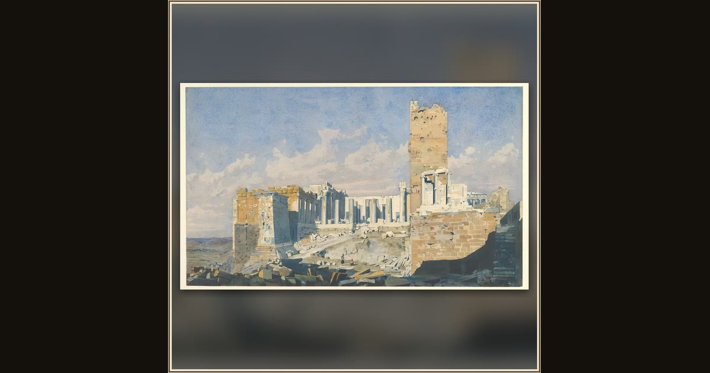

The Acropolis from the West, with the Propylaea and the Temple of Athena Nike, Athens
Thomas Hartley Cromek · 1834 · met
A watercolour of the western approach to the Acropolis, with the Propylaea and the Temple of Athena Nike, the citadel Cylon was told at Delphi to seize (1.126.4). Explore its place in Thucydides's History of the Peloponnesian War, Book I, chapter 492.